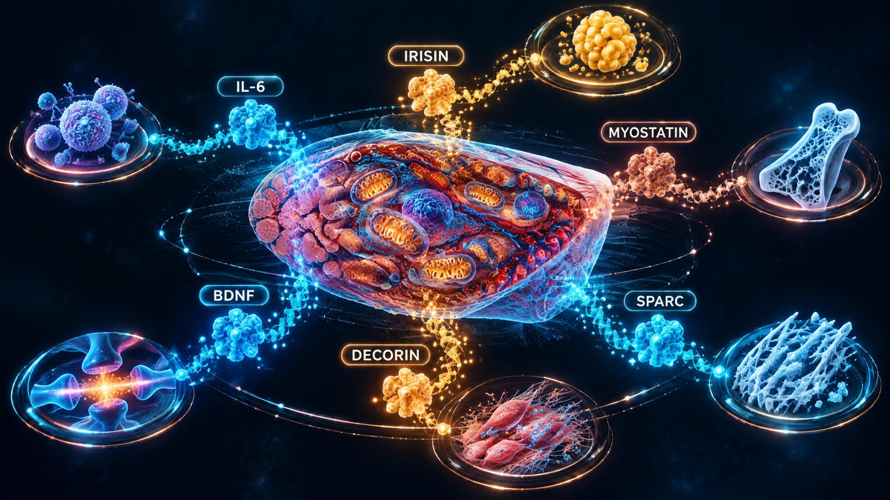

The Sodium-to-Potassium Ratio: The Number That Decides What Salt Actually Does to You
Salt is not the problem. The ratio is — and the ancestral inversion is striking.
16 October 2026Evidence-based healthspan, biological age and performance. New articles daily at www.agingfthat.com.
Salt is not the problem. The ratio is — and the ancestral inversion is striking.
16 October 2026How gut microbes turn fibre into butyrate, and what the science really shows.
14 October 2026Only 4% of UK adults hit 30g a day. Every extra 10g cuts mortality risk by about 10%.
13 October 2026One in five adults 51-75 cannot hold it for ten seconds. Those who cannot had 84% higher mortality.
12 October 2026What independent lab biomarkers measure, and how the numbers map onto your plan.
11 October 2026Why algorithm-driven biomarker assessment beats an online quiz.
10 October 2026The measurable pathway from testing to intervention.
9 October 2026Your vagus nerve is one of the most honest readouts of your biological age.
9 October 2026
Every contraction is a dose of medicine your body makes itself.
8 October 20269.6 of your final years are in poor health. It does not have to be that way.
7 October 2026Fitness predicts death risk more strongly than most single numbers a doctor looks at.
6 October 2026A data-driven programme, measured with independent lab biomarkers.
5 October 2026The years you live in poor health are the gap that matters.
5 October 2026